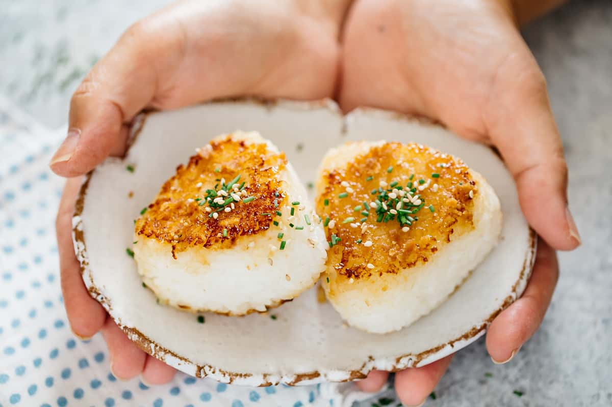

Yaki Onigiri

Description
Yaki onigiri is a type of Japanaese rice ball that has been grilled. The word "yaki" means grilled in Japanese. Onigiri are triangular-shaped balls of rice. Mostly these are coated in soy sauce but the name itself means grilled rice ball. Perfect for a picnic or a snack!
Ingredients
- Rice
- Soy sauce
- Oil
- Furikake
Instructions
- Shape by hand - Wet your hands with water and take about ½ cup of warm rice in your hands and firmly but gently mold the rice into a triangular shape.
- Shape with a mold - Add the appropriate amount of rice to fill the mold and press down to create a triangular shape.
- Add filling (Optional): If adding the filling, create an indentation into the rice before shaping and add about 1 tablespoon. Enclose the filling with rice and shape with your hands or with a mold.
- Grill: Heat a pan over medium heat and add the oil. Grill each side of the onigiri until the exterior forms a crispy crust and the color is golden-brown. Avoid flipping too often to keep the shape intact.
- Season with sauce: Lower the heat to low heat and brush one side of the rice ball with soy sauce or your sauce of choice. Quickly flip the rice ball and caramelize that side for 15 to 30 seconds. Watch for burning as the sauce can easily burn. Apply sauce to the other side and flip over to caramelize that side.
- Serve immediately while the crust is crispy and hot and the interior rice is soft and fluffy. Sprinkle on furikake before serving for more flavor.